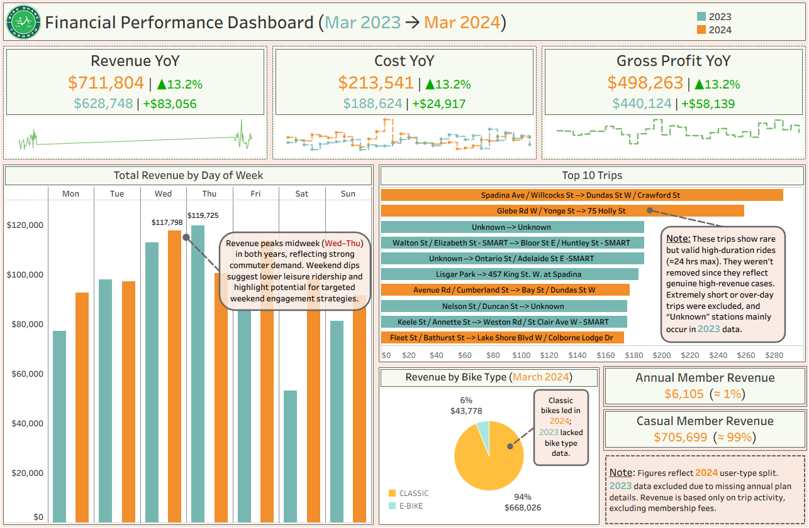
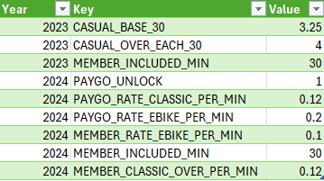

Bike Share Toronto Analysis (March 2023 vs March 2024) + Financial Extension
Overview

This analysis explores how Bike Share Toronto usage changed between March 2023 and March 2024, focusing on hourly ridership, weekday vs weekend, and member vs casual mix.
The project shows a clear workflow from Excel cleaning to Tableau dashboards, with decisions logged for transparency. The new Financial Extension adds a simple revenue–cost–profit view based on public pricing and documented assumptions.
Project Purpose
Motivation
Living in Mississauga, I rarely saw Lime scooters or shared bikes in active use. Many looked idle or abandoned mid-trip.
That raised a question: are these systems being used effectively, or just growing in size?
I tried to access Lime GBFS but the process stalled, so I pivoted to Bike Share Toronto open data, which is clean and well structured. The work evolved into a business-style analysis that checks if ridership growth kept pace with network expansion.
Core Question
How did Bike Share Toronto usage differ between March 2023 and March 2024 by hour, by weekday vs weekend, and by user type?
Why These Months?
Each monthly file has hundreds of thousands of trips, so a single month can be representative.
I chose March 2023 and March 2024 to keep scope focused while allowing a true year-over-year comparison.
Tools & Stack
Excel (cleaning and validation) · Tableau (visualization) · Python/SQL (planned automation)
Data Summary
- Source: Bike Share Toronto Open Data
- Months analyzed: March 2023 and March 2024
- Volume: ~537k trips combined
- Key fields: Trip ID, duration, start/end stations, times, bike ID, user type
- 2024 addition:
Model(bike type)
- Supplement: Station reference CSV with IDs, names, and coordinates for mapping
March vs March gives comparable seasonal conditions at high volume.
Cleaning & Validation (Excel)
I used a Data Issues Log rather than ad-hoc fixes.
Cleaning Steps
- Coerced types (timestamps to datetime, duration to minutes)
- Dropped incomplete rows with missing start/end station or time
- Removed duplicates with
(start_time, end_time, bike_id)
- Created
Start Hour,Day of Week,Same Station?,Mappable
- Joined station IDs to a reference file and flagged missing IDs as Unmapped
Schema Notes (2023 vs 2024)
| Field | 2023 | 2024 | Notes |
|---|---|---|---|
| Trip Id | ✓ | ✓ | Unique per trip |
| Trip Duration (sec) | ✓ | ✓ | Converted to minutes |
| Start/End Station Id & Name | ✓ | ✓ | Some IDs updated |
| Start/End Time | ✓ | ✓ | Datetime |
| Bike Id | ✓ | ✓ | |
| User Type | ✓ | ✓ | Annual or Casual |
| Model (bike type) | — | ✓ | New in 2024 |
| Derived columns | ✓ | ✓ | Created during cleaning |
Some 2024 station IDs were not in the 2023 map file. They are kept for totals and flagged Unmapped for maps.
Derived Columns
| Column | Type | How it’s computed | Why it matters |
|---|---|---|---|
| Trip Duration (min) | Numeric | duration_sec / 60 |
Consistent time comparison |
| Start Date | Date | date(Start Time) |
Day-level grouping |
| Start Hour | Integer | hour(Start Time) |
Hourly patterns |
| Day of Week | Text | weekday(Start Time) |
Weekday vs weekend |
| Same Station? | Boolean | Start Station Id == End Station Id |
Loops vs A→B |
| Mappable | Boolean | In station reference | Map readiness |
Data Issues (logged)
| Issue | Fix / Decision | Kept? | Example Count |
|---|---|---|---|
| End Station = NULL | Drop row | ✗ | 80 |
| Trip duration < 1 min | Drop row | ✗ | 417 |
| Trip duration > 24 hr | Drop row | ✗ | 43 |
| Start = End station | Keep, flag as Same Station | ✓ | 6,835 |
| Inconsistent station names | Standardize by ID | ✓ | 15,942 |
| Station ID missing (new) | Keep, mark Unmapped | ✓ | 22,000 |
From Excel to Tableau
The two months were unioned and joined to the station reference. Trips with missing reference stayed in totals but were marked Unmapped for mapping.
Key fields used: duration (min), hour, weekday, user type, station names, and Model for 2024.
Dashboards & Insights
1) Overview Dashboard
At a Glance
- Total Trips: 537,045 (both months)
- Avg Duration: ~15 minutes
- Network Size: 7,028 bikes across 815 stations (about 8.6 bikes per station)
- Annual Members: ~21.5% share
Usage Patterns
- Peaks at 8–9 AM and 5–7 PM fit office commutes
- Midday and weekend rides are steady
- Tuesday to Thursday is slightly higher, matching hybrid schedules
Business Interpretation
- Peaks support dock rebalancing and staffing
- Short average duration fits a first/last-mile role
- A ~1-in-5 membership share suggests room to convert frequent casuals
2) Comparison Dashboard

Key Observations
- Trip Volume: +39% (224k → 312k)
- Average Duration: +12.8% (14.4 → 16.2 min)
- Assets: +9% bikes and +20% stations
- Member Share: −2.1 pp (22.7% → 20.6%), casuals grew faster
- Saturday Spread: wider range of use, likely leisure and tourism
Interpretation
- Supply scaled with demand, not an overcapacity story
- Longer trips likely reflect leisure or extended routes
- Commute peaks remain; lighter Mondays and Fridays show hybrid effects
- More casuals in the funnel opens up retention and conversion plays
3) Commuter Patterns Dashboard

Routes with a single location such as Tommy Thompson Park are round trips. Trips with Unmapped stations were excluded from route mapping.
At a Glance
- ~97% of trips are point-to-point commuting
- Top corridors: Union Station, Front St, Bay St, Yonge St
- Loop routes: recreational trips like Tommy Thompson Park remain active
- 2024 growth: most high-traffic routes increased further, showing consolidation rather than fragmentation
Interpretation
- Bike Share Toronto serves primarily urban commuters with consistent weekday use
- Loop trips reflect weekend leisure demand
- Operational priority: dock turnover and rebalancing in core corridors during peaks
- Marketing insight: weekend casuals are candidates for day-pass → subscription funnels
Bottom line: the commuter network is expanding efficiently, sustaining weekday reliability while attracting weekend explorers.
Financial Extension — Business and Revenue Analysis
Why a financial view?
Bike Share Toronto’s open data does not include pricing, ledger, or cost fields. To connect ridership to business outcomes, I built a simple financial layer:
- Trip-level revenue model using public pricing from City background files (2023/2024) and the current pricing page.
- Cost proxy of 30% of revenue, guided by NACTO’s shared micromobility benchmarks (typical range 25–35%).
- Transparent rules: 2023 annual-member rides are set to $0 per trip (model type and overage billing not available). A small set of 2023 annual trips over 30 minutes (n=806) was flagged and excluded from revenue.
- Scope: Membership fees, taxes, and non-operational costs are out of scope. Results are modeled estimates to illustrate direction, not accounting figures.
What to look for below:
1) YoY Revenue, Cost, and Gross Profit KPI cards.
2) Revenue by day of week to match commuter patterns.
3) Top 10 trips by modeled revenue.
4) Bike-type split (classic vs e-bike) and member vs casual contribution.
The goal is to turn usage data into a concise business readout that supports decisions on pricing, promotions, and operations.

Findings
- Revenue: $711,804 in Mar 2024 vs $628,748 in Mar 2023 (+13.2%)
- Cost (proxy): $213,541 in 2024 using a 30% operating ratio
- Gross Profit: $498,263 in 2024 vs $440,124 in 2023 (+13.2%)
- Weekday revenue peaks midweek, matching commuter demand
- Classic bikes generated ~94% of March 2024 revenue; e-bikes are smaller but a clear upsell
Interpretation and Suggestions
- Efficiency: GP growth tracks revenue, suggesting scalable operations rather than cost inflation
- Demand focus: Wednesday and Thursday are reliable cash-flow days; weekends are an opportunity for promotions or partner offers
- Growth play: Most per-trip dollars come from casuals; nudge frequent casuals toward annual memberships to stabilize demand and retention
How This Was Modeled
New Excel Fields
| New Field | Purpose | Description |
|---|---|---|
| Est. Trip Revenue ($) | Calculate revenue per row | Applies the correct pricing rule by user type, duration, and bike model when available |
| Pricing Basis | Keep logic transparent | Label such as “Casual classic unlock + per-min” or “Member classic ≤ 30 min” |
Pricing Framework

| Year | User Type | Bike Type | Pricing Rule | Formula / Rate | Notes |
|---|---|---|---|---|---|
| 2023 | Casual | Classic | Base 30 min | $3.25 flat | +$4 for each additional 30-min block |
| 2023 | Annual | Classic | Included | $0 per trip | Overage not identifiable in the dataset |
| 2024 | Casual | Classic | Unlock + per-min | $1 + $0.12 × minutes | 2024 model |
| 2024 | Casual | E-bike | Unlock + per-min | $1 + $0.20 × minutes | Higher e-bike rate |
| 2024 | Annual | Classic | Included + overage | MAX(0, minutes − 30) × $0.12 | Conservative |
| 2024 | Annual | E-bike | Per-min | $0.10 × minutes | Applies to all durations |
Annual member rides in 2023 were treated as $0 because the dataset lacks overage billing and bike model detail.
Additional Data Issue
| Issue | Year | Count | Likely cause | Fix |
|---|---|---|---|---|
| Annual member trips > 30 min | 2023 | 806 | Overage billing not present in dataset | Excluded from revenue and noted in assumptions |
Cost Proxy
A 30% operating cost ratio was applied to revenue to estimate costs. This aligns with the NACTO 2023 Shared Micromobility Report, which places typical cost shares in the 25–35% range for comparable systems.
References, Sources, and Assumptions
| # | Source | What it provides | How it was used |
|---|---|---|---|
| 1 | NACTO 2023 Shared Micromobility Report | Cost and revenue benchmarks | Basis for the 30% operating cost proxy (within a 25–35% range) |
| 2 | City of Toronto Background File (2023) | 2023 pricing structure | Constants for 2023 casual pricing ($3.25 base, $4 per 30-min overage) |
| 3 | City of Toronto Background File (2024) | 2024 pricing and rate changes | Constants for 2024 unlock and per-minute rates |
| 4 | Bike Share Toronto Pricing | Public reference | Validation and a clear reader link |
All financial figures are modeled estimates for learning and portfolio display. When account-level data was unavailable, assumptions were applied and documented.
Next Steps
- Automate cleaning and revenue logic in Python (Pandas)
- Add February and April to test seasonal stability
- Use weather and event data for richer explanations
- Publish interactive dashboards with filters on Tableau Public
Repro Notes and Disclaimer
- Assumptions: local timezone, station names standardized by ID
- Color coding: 2023 teal, 2024 orange
- Artifacts:
data_issues.xlsx, Tableau workbook (.twb),/imagesfolder
This is a personal educational project.
Data: Bike Share Toronto Open Data Portal.
Logo used for illustrative purposes.